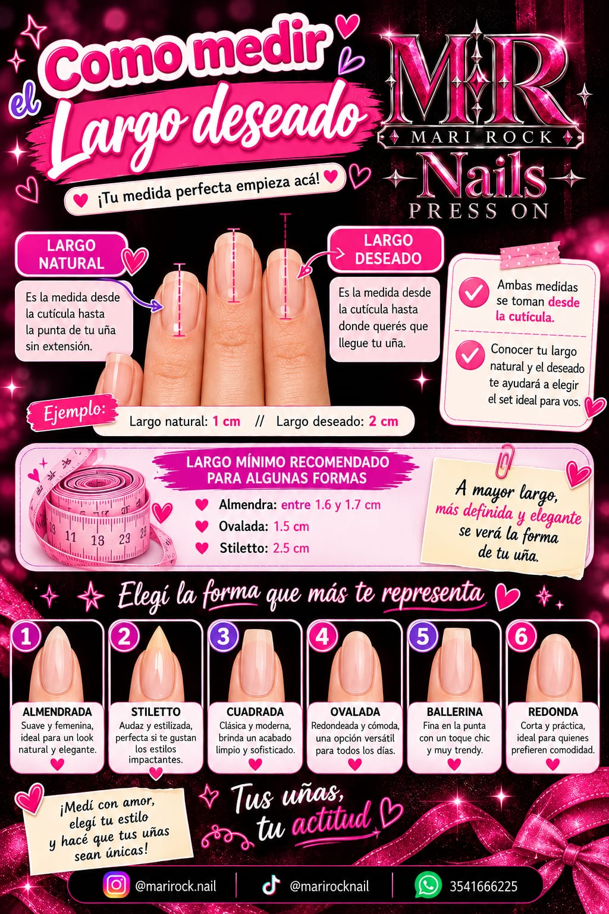
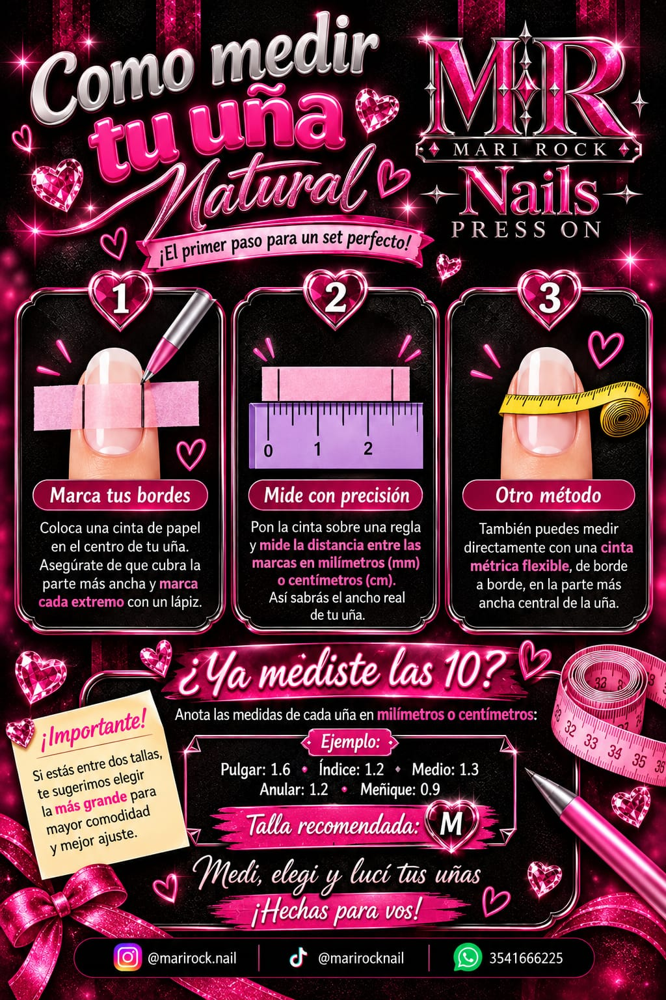
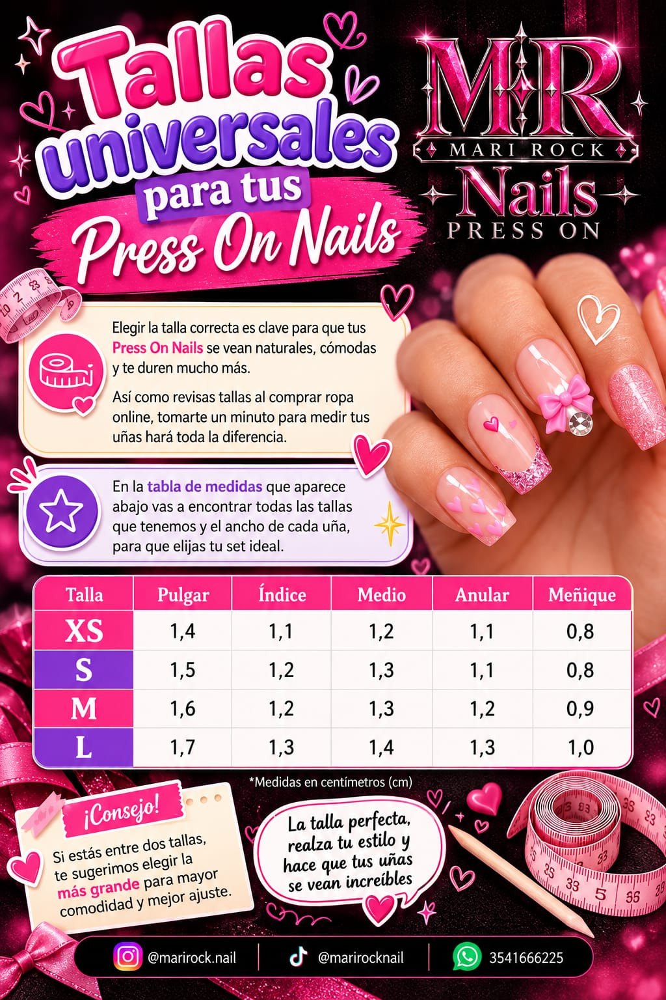

GUÍA DE MEDICIÓN
¡BIENVENID@S!
¡Buenas! Acá vas a encontrar todo lo necesario para medir y armar tu set ideal: cómo medir tus uñas, elegir el largo, la forma y qué mensaje enviarme.
Seguí la guía paso a paso y ante cualquier duda escribime.
¿POR QUÉ ES IMPORTANTE MEDIRSE?
Medir bien asegura un calce perfecto, mayor duración y comodidad. Tus press on se hacen a medida, así que cada milímetro cuenta.
TIPS IMPORTANTES
- Medí sobre tu uña natural, sin gel, acrílico ni esmalte grueso.
- Medí siempre la parte más ancha de la uña.
- Medí dos veces para confirmar.
- Medí las 10 uñas: cada dedo es distinto.
MÉTODOS DE MEDICIÓN
MÉTODO 1
Con una cinta métrica flexible, medí el ancho de la uña de lado a lado.
MÉTODO 2
Pegá una cinta de papel en el centro de la uña, marcá cada extremo con lápiz y apoyala sobre una regla para leer los milímetros.

¿CÓMO ENVIAR LAS MEDIDAS?
Anotá la medida de cada dedo en milímetros o centímetros y enviámela por WhatsApp o Instagram junto con el diseño que elegiste.
ENVIAR MIS MEDIDASLARGO DE UÑAS
Largo natural: desde la cutícula hasta la punta de tu uña, sin extensión.
Largo deseado: desde la cutícula hasta donde querés que llegue.
Largo mínimo recomendado: almendra entre 1,6 y 1,7 cm, ovalada 1,5 cm y stiletto 2,5 cm.

FORMAS DE UÑAS
- Almendrada: suave y femenina.
- Stiletto: audaz y estilizada.
- Cuadrada: clásica y moderna.
- Ovalada: redondeada y cómoda.
- Ballerina: fina en la punta, muy trendy.
- Redonda: corta y práctica.
¿CÓMO DEBERÍA VERSE TU MENSAJE?
Diseño: el que elegiste
Forma: almendrada
Largo natural: 1 cm
Largo deseado: 2 cm
Pulgar 1,6 · Índice 1,2 · Medio 1,3 · Anular 1,2 · Meñique 0,9
Talla recomendada: M
¿Y SI QUIERO ELEGIR UN TALLE?
Si preferís elegir una talla, usá esta tabla (medidas en cm). Si estás entre dos, elegí la más grande para mayor comodidad y mejor ajuste.
